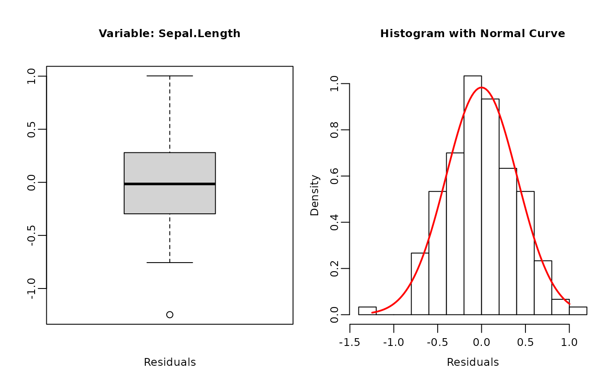
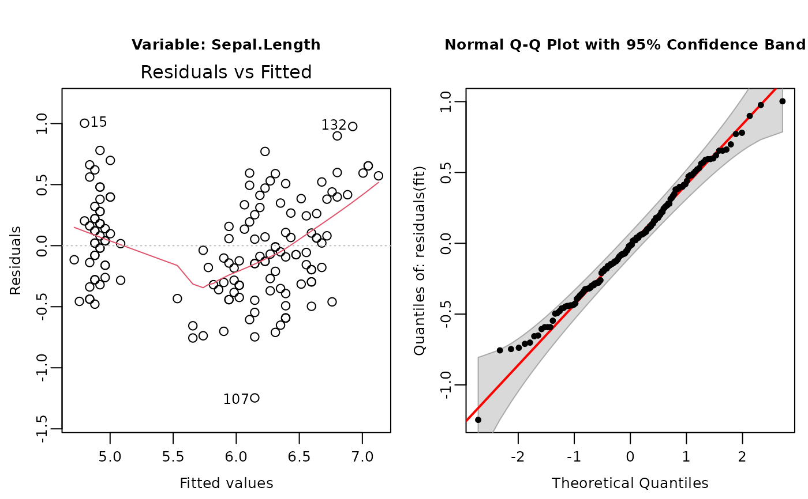
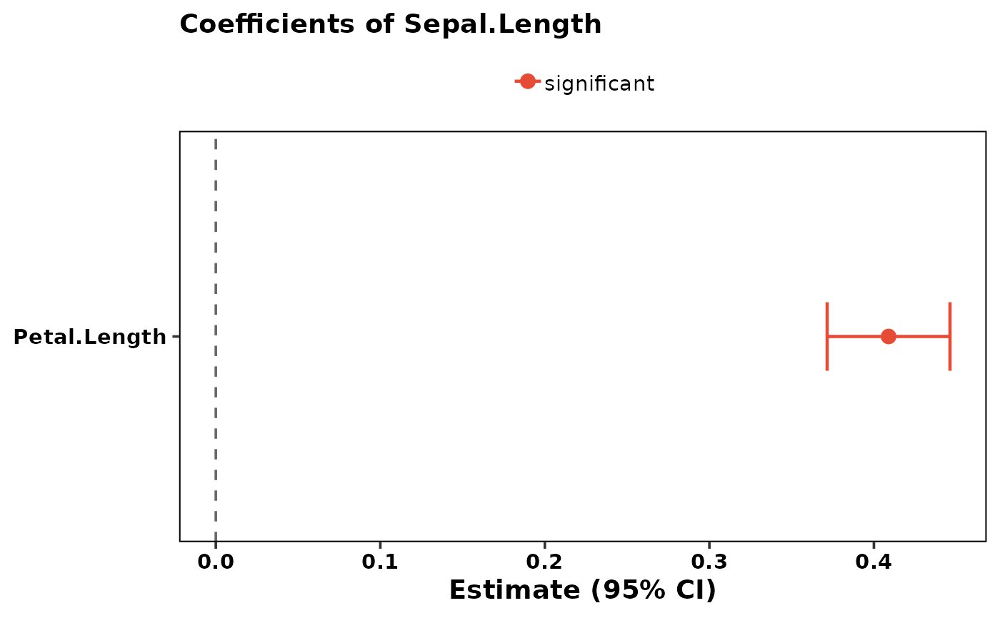
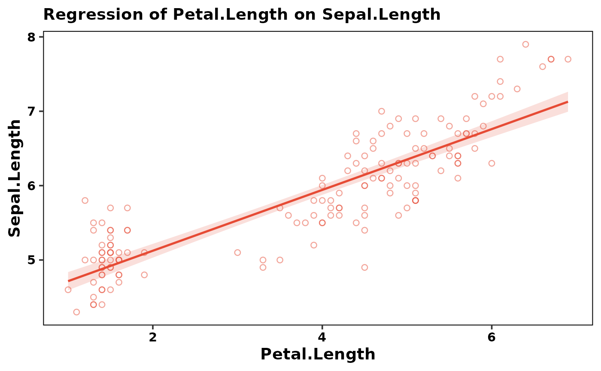
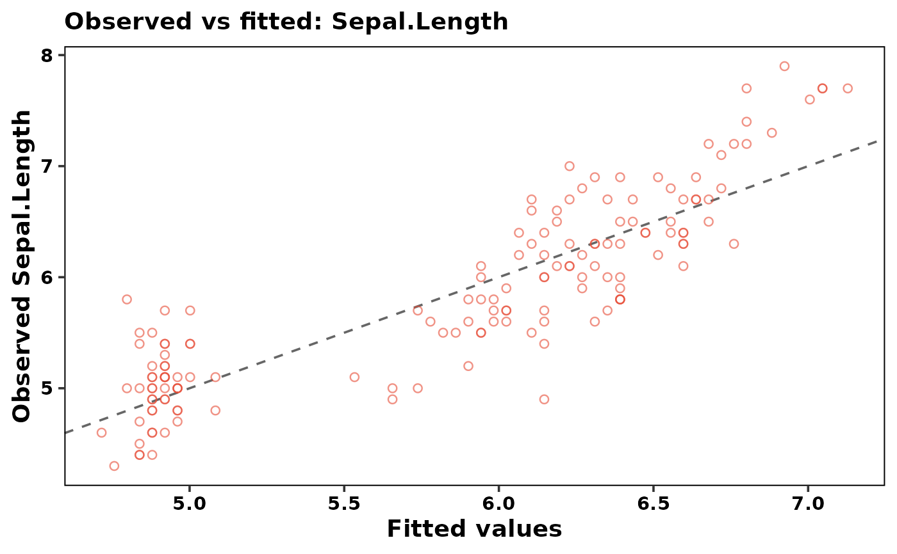

Perform multiple lm() functions with optional data transformation, inspection, regression plots and post hoc test.
Source: R/flm.R
f_lm.RdPerforms ordinary least squares linear regression (stats::lm) on a
given dataset with options for (Box-Cox) transformations, normality tests,
regression plots, and post hoc analysis for categorical predictors. Several
response parameters can be analysed in sequence and the generated output can
be in various formats ('Word', 'pdf', 'Excel').
Usage
f_lm(
formula,
data = NULL,
norm_plots = TRUE,
effect_plots = TRUE,
contrast_plots = FALSE,
transformation = TRUE,
force_transformation = NULL,
alpha = 0.05,
adjust = "sidak",
intro_text = TRUE,
close_generated_files = FALSE,
open_generated_files = interactive(),
output_type = "default",
save_as = NULL,
save_in_wdir = FALSE,
...
)Arguments
- formula
A formula specifying the model to be fitted. More response variables can be added using
-or+(e.g.,response1 + response2 ~ predictor) to do a sequentiallm()for each response parameter.- data
A data frame containing the variables in the model.
- norm_plots
Logical. If
TRUE, diagnostic residual plots are included in the output files. Default isTRUE.- effect_plots
Logical. If
TRUE, regression / effect plots are included in the output files after the post hoc table. See Details for what is drawn and how the plots are stored. Default isTRUE.- contrast_plots
Logical. If
TRUE, a contrast forest plot is added for each categorical post hoc term: one row per pairwise comparison, showing the estimated difference between two levels with its confidence interval and a reference line at zero. A CI that excludes zero indicates a significant difference. DefaultFALSEbecause the number of pairwise contrasts grows quickly with the number of factor levels (k levels give k(k-1)/2 contrasts). Main-effect contrast plots are stored asout$y1$contrast_plot_<term>and interaction cell-contrast plots asout$y1$interaction_contrast_plot_<term>. Contrast CIs use the sameadjustmethod as the post hoc p-values, so figure and table agree.- transformation
Logical or character string. If
TRUE, or if"boxcox"applies anf_boxcox()transformation if residuals are not normal. If"bestnormalize", appliesf_bestNormalize()transformation. IfFALSEno transformation will be applied. Default isTRUE.- force_transformation
Character string. A vector containing the names of response variables that should be transformed regardless of the normality test. Default is
NULL.- alpha
Numeric. Significance level for tests, post hoc comparisons, and Shapiro-Wilk test. Default is
0.05.- adjust
Character string specifying the method used to adjust p-values for multiple comparisons. Available methods include:
- "tukey"
Tukey's Honest Significant Difference method.
- "sidak"
Sidak correction.
- "bonferroni"
Bonferroni correction.
- "none"
No adjustment.
- "fdr"
False Discovery Rate adjustment.
Default is
"sidak".- intro_text
Logical. If
TRUE, includes a short explanation about linear regression assumptions in the output file. Default isTRUE.- close_generated_files
Logical. Closes open Excel or Word (NOT pdf) files before writing, depending on the output format. Works on Windows (taskkill), macOS (pkill) and Linux (pkill/soffice). Default
FALSE. WARNING: Always save your work before using this option!!- open_generated_files
Logical. Whether to open the generated output files after creation. Defaults to
TRUEin an interactive R session andFALSEotherwise (e.g. in scripts or automated pipelines).- output_type
Character string specifying the output format. Default is
"default"."default": Returns the object and lets R decide whether to print; auto-prints if unassigned, silent if assigned to a variable."console": Forces immediate printing to the console."pdf","word","excel": Saves results to a file of the corresponding format."rmd": Stores the raw markdown string inside the returned object for use in R Markdown documents.
- save_as
Character string specifying the output file path (without extension). If a full path is provided, output is saved to that location. If only a filename is given, the file is saved in
tempdir(). If only a directory is specified (existing directory with trailing slash), the file is named "dataname_lm_output" in that directory. If an extension is provided the output format specified with option "output_type" will be overruled.- save_in_wdir
Logical. If
TRUE, saves the file in the working directory. Default isFALSE. Ifsave_aslocation is specifiedsave_in_wdiris overwritten bysave_as.- ...
Additional arguments forwarded to
lm. The argumentssubsetandweightsare handled specially: when supplied, they are applied viamodel.frameso that the Shapiro-Wilk test, Levene/Breusch-Pagan test, optional transformations, residual diagnostics, andemmeanspost hoc tests all see the exact same row set aslm()itself.
Value
An object of class 'f_lm' containing results from lm(), normality tests, transformations, coefficient tables, Type II ANOVA, and post hoc tests. Using the option "output_type", it can also generate output in the form of: R Markdown code, 'Word', 'pdf', or 'Excel' files. Includes print and plot methods for 'f_lm' objects.
Details
f_lm() is the regression sibling of f_aov: it shares the
same assumption checks (Shapiro-Wilk, Anderson-Darling, Levene / Breusch-Pagan),
the same optional Box-Cox / bestNormalize transformation workflow, the same
object structure, and the same shared publication theme
(f_theme_pub()) and palette (f_pub_palette()). Where
f_aov() converts all predictors to factors, f_lm() keeps numeric
predictors numeric so they are modelled as continuous regression terms, and
it adds regression-specific output: a coefficient table, a coefficient forest
plot, a Type II Analysis of Variance table, the overall \(R^2\) / adjusted
\(R^2\) / model F-test, and regression plots (see Details).
The function performs the following steps:
Check if all specified variables are present in the data.
Ensure that the response variable is numeric.
Fit a linear model using the specified formula and data. Numeric predictors are kept numeric (continuous regression terms); character and logical predictors are converted to factors.
Check normality of the residuals using the Shapiro-Wilk and Anderson-Darling tests, and homoscedasticity using a Breusch-Pagan test (
rstatix/carstyle) on the model residuals.If residuals are not normal and
transformation = TRUEapply a data transformation and refit.Report the coefficient table, a coefficient forest plot, a Type II Analysis of Variance table, and the overall model fit (\(R^2\), adjusted \(R^2\), F-statistic).
For categorical predictors, if significant effects are found, post hoc tests use estimated marginal means from
emmeans()with the chosen adjustment, summarised with a compact letter display.
Regression and effect plots. When effect_plots = TRUE the
following figures are produced (the current de facto standard for visualising
a multiple-regression model):
Coefficient forest plot (always, when there is more than an intercept): one row per coefficient with its Wald confidence interval and a reference line at zero. This is the standard way to read a model with many predictors at a glance and scales to any number of terms. Stored as
out$y1$coef_forest_plot.Partial-effect (adjusted prediction) plots for each continuous predictor: the model-predicted response across the range of that predictor, with the other predictors held at their mean (numeric) or reference level (factor), shown with a confidence band and a rug / scatter of the raw data. These are computed from the fitted model via
emmeans::emmip()(equivalent to the effects / ggeffects standard) so the lines are consistent with the rest of the report. Stored asout$y1$effect_plot_<predictor>.Estimated-means plots for each categorical predictor (estimate \(\pm\) CI, jittered raw data, compact-letter-display labels), matching
f_aov. Stored asout$y1$effect_plot_<predictor>.Slope plots for a significant numeric \(\times\) categorical interaction: a scatter of the raw data with one model-fitted regression line per factor level and a confidence band (the lines are not parallel when the interaction is significant), matching
f_lmer. Stored asout$y1$interaction_plot_<num>_<fac>.Categorical interaction plots (2-, 3-, 4-way) when a significant categorical interaction is present, matching
f_aov.Observed-versus-fitted plot: observed response against the model fitted values with a 1:1 reference line, a quick visual of overall fit. Stored as
out$y1$obs_fitted_plot.
All plots are ggplot2 objects stored in the returned object so they can
be retrieved and customised, and plot() re-prints them so the
interactive output matches the report output.
When the response was transformed (Box-Cox or bestNormalize), the post hoc
estimates are back-transformed to the original scale (medians), exactly as in
f_aov.
Outputs can be generated in multiple formats ("pdf", "word", "excel" and "rmd") as specified by output_type. If output_type = "rmd" is used it is advised to use it in a chunk with {r, echo=FALSE, results='asis'}.
This function requires [Pandoc](https://github.com/jgm/pandoc/releases/tag) (version 1.12.3 or higher), a universal document converter.
Multiple Testing Across Response Variables
When several response variables are analysed in a single call
(e.g. y1 + y2 + y3 ~ x), each regression is an independent
null-hypothesis test at level alpha. The post hoc adjustments only
control the family-wise error rate within one model. They do
not protect against the inflation of Type I error across
the set of responses. With \(k\) independent responses all tested at
\(\alpha = 0.05\), the probability of at least one false positive is
\(1 - (1 - 0.05)^k\). Consider a Bonferroni (alpha = 0.05 / k) or
FDR correction across responses, or pre-registration of primary outcomes.
Author
Sander H. van Delden plantmind@proton.me
Examples
# Continuous predictor: simple linear regression.
f_lm_out <- f_lm(Sepal.Length ~ Petal.Length, data = iris)
print(f_lm_out)
#>
#>
#> ===========================================================
#> Linear regression of response variable: Sepal.Length
#> ===========================================================
#>
#> lm call: Sepal.Length ~ Petal.Length
#>
#> Coefficients:
#> Estimate Std. Error t value Pr(>|t|)
#> (Intercept) 4.3066034 0.07838896 54.93890 2.426713e-100
#> Petal.Length 0.4089223 0.01889134 21.64602 1.038667e-47
#>
#> Model fit: R-squared = 0.76 Adjusted R-squared = 0.7583
#>
#> --- Type II Analysis of Variance ---
#> Sum Sq Df F value Pr(>F)
#> Petal.Length 77.64330 1 468.5502 1.038667e-47
#> Residuals 24.52503 148 NA NA
plot(f_lm_out)




# \donttest{
# Mixed continuous + categorical predictors (ANCOVA-style multiple regression).
iris$Species <- factor(iris$Species)
f_lm(Sepal.Length ~ Petal.Length + Species, data = iris, output_type = "word")
#> Saving output in: /tmp/RtmplsKqN3/iris_lm_output.docx
# Two responses analysed in sequence, captured in one output file.
f_lm(Sepal.Width + Sepal.Length ~ Petal.Length * Species,
effect_plots = FALSE,
norm_plots = FALSE,
data = iris)
#>
#>
#> ===========================================================
#> Linear regression of TRANSFORMED response variable: Sepal.Width
#> ===========================================================
#>
#> lm call: Sepal.Width ~ Petal.Length * Species
#>
#> Coefficients:
#> Estimate Std. Error t value Pr(>|t|)
#> (Intercept) 1.21787651 0.1710640 7.1194206 4.743766e-11
#> Petal.Length 0.16966508 0.1162062 1.4600351 1.464587e-01
#> Speciesversicolor -0.82617802 0.2512624 -3.2881084 1.267613e-03
#> Speciesvirginica -0.52971383 0.2662290 -1.9896926 4.851868e-02
#> Petal.Length:Speciesversicolor 0.01383976 0.1238880 0.1117119 9.112074e-01
#> Petal.Length:Speciesvirginica -0.06493127 0.1218235 -0.5329944 5.948590e-01
#>
#> Model fit: R-squared = 0.4929 Adjusted R-squared = 0.4753
#>
#> --- Type II Analysis of Variance ---
#> Sum Sq Df F value Pr(>F)
#> Petal.Length 0.53026979 1 26.571920 8.234640e-07
#> Species 1.78931406 2 44.831433 7.305351e-16
#> Petal.Length:Species 0.04033613 2 1.010626 3.665580e-01
#> Residuals 2.87366706 144 NA NA
#>
#> --- Post hoc Comparisons of: Sepal.Width ---
#> _________________________________________
#> Species median (BT) lower.CL upper.CL Letter n
#> setosa 4.451867 3.088072 6.202695 a 50
#> virginica 2.571626 2.314153 2.849079 b 50
#> versicolor 2.570753 2.458030 2.687146 b 50
#>
#> Confidence level used: 0.95
#>
#> **Note:** Groups in the "Letters" column sharing the same letter are **not** significantly different (α = 0.05). Groups with different letters are significantly different.
#>
#> Note: post hoc 'median (BT)' values are back-transformed estimated marginal means (medians on the original scale). Report them as back-transformed medians; rely on the CIs.
#> Warning:
#> Based on the Breusch-Pagan Test (0.0032 ≤ 0.05) the residuals do
#> NOT have constant variance (heteroscedasticity).
#>
#>
#> ===========================================================
#> Linear regression of response variable: Sepal.Length
#> ===========================================================
#>
#> lm call: Sepal.Length ~ Petal.Length * Species
#>
#> Coefficients:
#> Estimate Std. Error t value Pr(>|t|)
#> (Intercept) 4.2131682 0.4074209 10.341071 4.331619e-19
#> Petal.Length 0.5422926 0.2767667 1.959385 5.199902e-02
#> Speciesversicolor -1.8056451 0.5984284 -3.017312 3.016413e-03
#> Speciesvirginica -3.1535091 0.6340741 -4.973408 1.846894e-06
#> Petal.Length:Speciesversicolor 0.2859884 0.2950624 0.969247 3.340471e-01
#> Petal.Length:Speciesvirginica 0.4534460 0.2901455 1.562823 1.202893e-01
#>
#> Model fit: R-squared = 0.8405 Adjusted R-squared = 0.8349
#>
#> --- Type II Analysis of Variance ---
#> Sum Sq Df F value Pr(>F)
#> Petal.Length 22.2745412 1 196.772993 1.008582e-28
#> Species 7.8433750 2 34.644134 5.205685e-13
#> Petal.Length:Species 0.3809771 2 1.682773 1.894918e-01
#> Residuals 16.3006817 144 NA NA
#>
#> --- Post hoc Comparisons of: Sepal.Length ---
#> _________________________________________
#> Species emmean.. SE lower.CL upper.CL Letter n
#> setosa 6.251104 0.63723520 4.991561 7.510647 ab 50
#> versicolor 5.520203 0.07000327 5.381836 5.658570 b 50
#> virginica 4.801645 0.16332376 4.478823 5.124467 a 50
#>
#> Confidence level used: 0.95
#>
#> **Note:** Groups in the "Letters" column sharing the same letter are **not** significantly different (α = 0.05). Groups with different letters are significantly different.
#>
# To print rmd output set chunk option to results = 'asis' and use cat().
f_lm_rmd_out <- f_lm(Sepal.Length ~ Petal.Length, data = iris, output_type = "rmd")
cat(f_lm_rmd_out$rmd)
#>
#> # Assumptions of Linear Regression
#> Checking the assumptions of ordinary least squares (OLS) linear regression is critical for ensuring the validity of its results:
#>
#>
#> ## 1. Linearity
#> - The relationship between each predictor and the mean of the response is assumed to be linear (in the parameters). Curvature in a residuals-vs-fitted plot signals a violation; consider adding polynomial terms or a transformation.
#>
#> ## 2. Independence
#> - Observations (and therefore residuals) must be independent. Independence violations (e.g. repeated measures, clustering, time series) cannot be fixed by transformation; use a mixed model (`f_lmer()`) or a model with an appropriate error structure instead.
#>
#> ## 3. Normality of residuals
#> - The residuals are assumed to be normally distributed. This applies to the residuals, not the raw response. OLS is robust to mild deviations in large samples. Assessed with the Shapiro-Wilk and Anderson-Darling tests and graphically with a Q-Q plot, histogram, or box plot.
#>
#> ## 4. Homoscedasticity (constant variance)
#> - The residual variance should be constant across the range of fitted values. A funnel shape in the residuals-vs-fitted plot indicates heteroscedasticity. Assessed with a Breusch-Pagan test. If violated, a transformation, weighted least squares, or robust (heteroscedasticity-consistent) standard errors are options.
#>
#>
#>
#>
#> # Analysis of: Sepal.Length
#>
#> ## Normality and homoscedasticity of residuals of: Sepal.Length
#> **Breusch-Pagan test** for homoscedasticity of residuals: statistic = 2.4932 p-value = 0.1143 . According to the 'Breusch-Pagan Test' (0.1143 > 0.05) residuals do not depart from **equal variance**
#> (homoscedasticity).
#>
#>
#> **Shapiro-Wilk Test** for Normality of residuals: W = 0.993 p-value = 0.6767 . According to 'Shapiro-Wilk Test' (0.6767 > 0.05) no significant departure from **normality** was detected
#> for the model residuals; check Q-Q plot.
#>
#> Anderson-Darling normality test : A = 0.2855 p = 0.6221
#> According to 'Anderson-Darling test' (0.6221 > 0.05) no significant departure from **normality** was detected
#> for the model residuals; check Q-Q plot.
#>
#> Check the plots in the figure below to assess normality and homoscedasticity.
#> 
#> ## Regression Summary of Sepal.Length
#>
#>
#>
#> **Table** of lm call: Sepal.Length ~ Petal.Length
#> **Coefficient Estimates** (direction and magnitude):
#>
#>
#> -------------------------------------------------------
#> Term Estimate Std t value Pr(>|t|)
#> Error
#> -------------- ---------- -------- --------- ----------
#> (Intercept) 4.3066 0.0784 54.94 < 0.001
#>
#> Petal.Length 0.4089 0.0189 21.65 < 0.001
#> -------------------------------------------------------
#>
#>
#> **Model fit:** $R^2$ = 0.76, adjusted $R^2$ = 0.7583, F(1, 148) = 468.55, p < 0.001.
#>
#>
#> *The 'Pr(>|t|)' column tests the coefficient against its reference (Wald t-test). With a single predictor this is equivalent to the Type II F-test below ($F = t^2$), so both report the same significance.*
#>
#>
#> ### Coefficient forest plot
#> 
#>
#> *Each row is a coefficient (the intercept is omitted) with its 95% confidence interval. The dashed line marks zero: a coefficient at zero has no effect relative to its reference. Points to the right increase the response, points to the left decrease it. A CI that touches or crosses zero means the term is not distinguishable from its reference at α = 0.05; a CI clear of zero is a significant effect.*
#>
#> *Continuous term (Petal.Length) has no reference level; the estimate is the change per one-unit increase (on the scale stated above), so zero means no association.*
#> ## Analysis of Variance of: Sepal.Length
#>
#> The table below tests the significance of the predictor term via an F-test. With a single predictor this is equivalent to the coefficient t-test above ($F = t^2$).
#>
#>
#> ---------------------------------------------------------
#> Term Sum Sq Df F value Pr(>F)
#> -------------- --------- ----- ---------- ---------------
#> Petal.Length 77.6433 1 468.5502 **1.039e-47**
#>
#> Residuals 24.5250 148 NA
#> ---------------------------------------------------------
#>
#>
#> Bold p-values are significant at α = 0.05.
#>
#>
#> *No categorical predictors were included, so no estimated marginal means or post hoc comparisons were produced. See the coefficient table and the regression plot for the continuous predictor effect.*
#>
#>
#> ## Regression Plot of: Sepal.Length (Petal.Length)
#> 
#>
#> *Points are (jittered) raw data; estimates and fitted lines are model estimates with 95% CI.*
#>
#>
#> ## Observed vs Fitted Plot of: Sepal.Length
#> 
#>
#> *Points on the dashed 1:1 line are perfectly predicted; scatter around it reflects residual error.*
#>
# }
